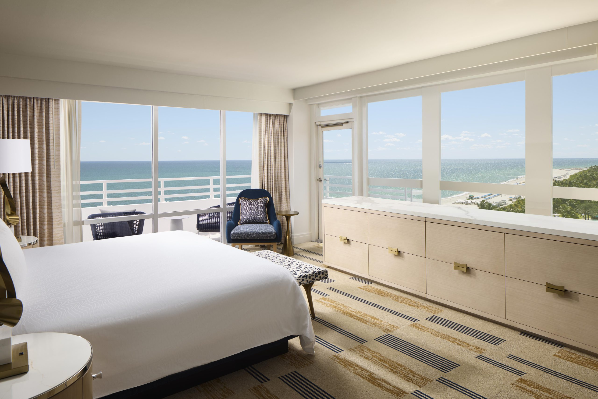
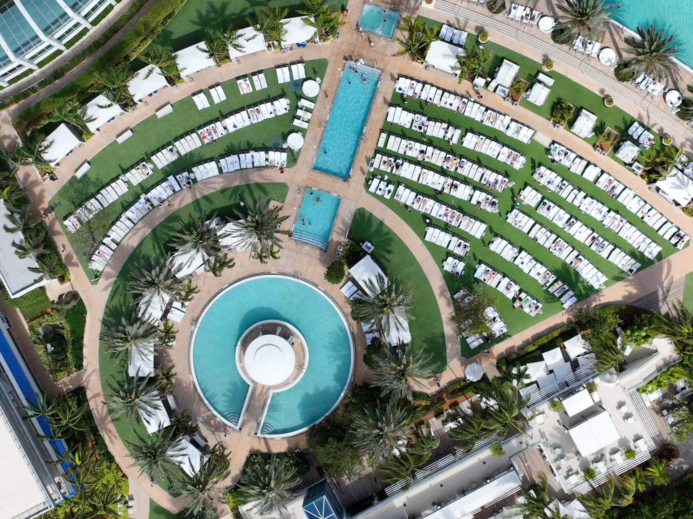
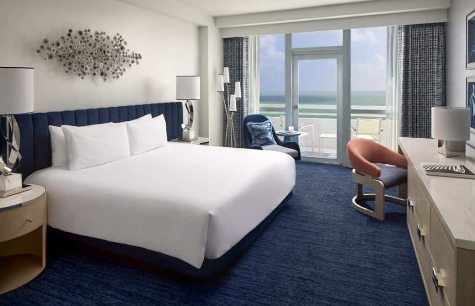
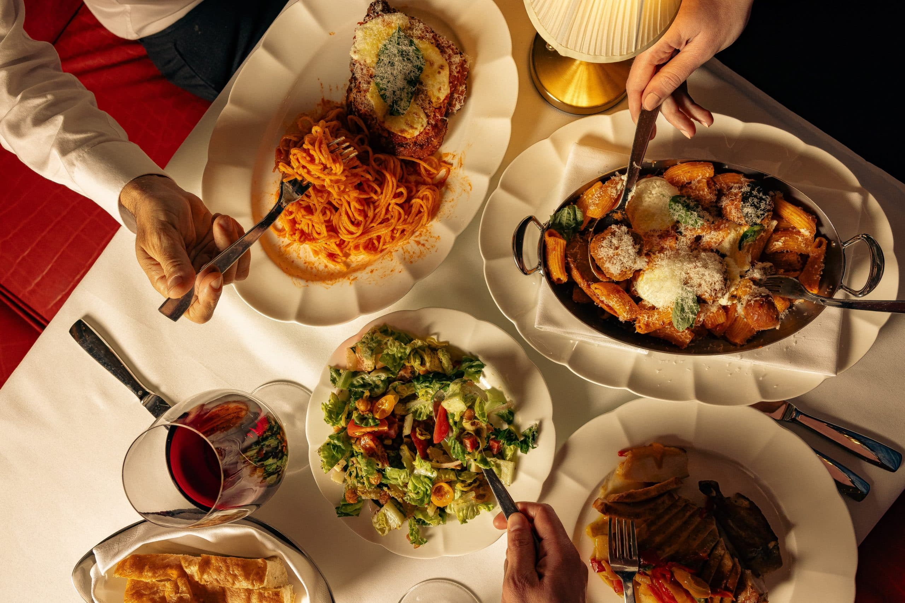
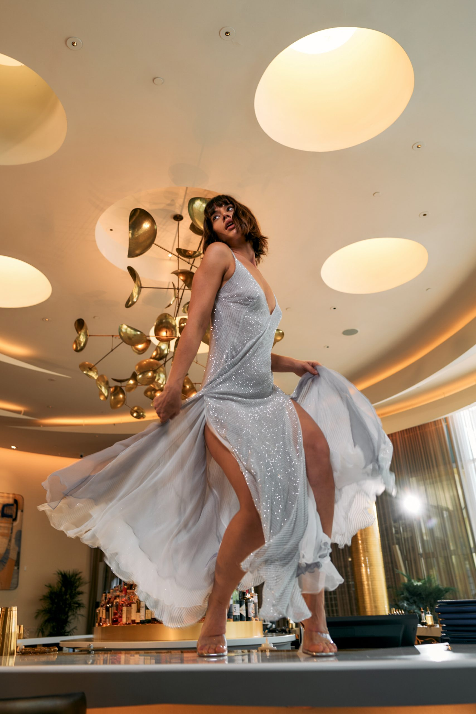

Favorite Hotels
Fontainebleau is still the classic family resort pull when a client wants iconic Miami scale, a lot to do, and a property that can keep everyone busy.
Fontainebleau is a very different recommendation from The Setai or Four Seasons Surf Club. I use it when the client wants classic Miami energy, a resort that feels alive all day, and enough restaurants, pools, and activity on site that the hotel itself becomes a full trip base. For families especially, that flexibility matters.
What makes it unique
Fontainebleau can carry the entire trip on property better than almost anywhere else in Miami.
For families and groups, that matters. Between the pools, dining lineup, beach, spa, and sheer scale of the resort, it is one of the easiest places to book when not everyone wants the same kind of day.
Stay
More than 1,500 rooms and suites
It is large, but that size is exactly what lets the property work for families, groups, and clients who want options.
Dining
One of the deepest lineups in Miami
Prime 54, Hakkasan, Mirabella, Vida, Bleau Bar, La Cote, Arkadia Grill, and more give the hotel real dining coverage.
Best For
Family luxury with energy
Great for affluent families, friend groups, and first-time Miami clients who want a lot of action around them.
Known For
Poolscape, dining, and classic Miami status
The name recognition, the resort rhythm, and the broad amenity set are still the reason people keep booking it.


The overall setup
Fontainebleau is huge by design. With more than 1,500 rooms and suites spread across different towers and categories, this is not a quiet boutique moment. It is a proper Miami resort, and for the right client that is exactly the appeal. The property gives you beach, pools, kids' flexibility, nightlife, spa, and a big enough footprint that different members of the same group can have very different days and still all be happy.
When I use Fontainebleau, it is usually because the client values convenience and energy over intimacy. If they want one place where a whole family can settle in and not run out of things to do, this works.
Rooms, suites, and how I think about them
The room product matters here because the hotel is so large. I tend to focus on stronger suite categories or better room placements so the stay feels elevated from the start. The Trésor and Sorrento accommodations help when families want more room to spread out, and the better suite product can make a very big hotel feel much more comfortable and luxurious.
Standard rooms are fine, but if a client wants the experience to feel meaningfully special, I would usually step up into a room or suite category with more space and a stronger sense of place.



Restaurants and bars
Officially, Fontainebleau's signature lineup includes Prime 54, Hakkasan, Mirabella, Vida, and Bleau Bar, with pool and casual outlets layered in around them. That is a real advantage because it lets the hotel carry a multi-day stay without dining starting to feel repetitive. Prime 54 handles the classic upscale dinner. Hakkasan gives you the modern Cantonese high-energy dinner option. Mirabella offers coastal Italian. Vida is easy and useful. Bleau Bar gives the hotel that iconic pre-dinner or after-dinner Miami social scene.
For family stays, that restaurant depth matters because you are not constantly forced off property just to keep the meals interesting.
Pools, beach, spa, and things to do
The poolscape is one of the biggest selling points. Fontainebleau has enough pool and cabana life to keep a whole family occupied, and it is one of the few Miami luxury properties where I genuinely trust the hotel to support a broad range of ages. Add in beach access, watersports nearby, the Lapis Spa, and the general resort rhythm, and there is very little risk of clients feeling boxed in.
This is also a useful property for celebratory groups or multi-generational trips because different people can chase different versions of Miami without leaving the resort.
How good the service is
At a resort this size, service is never going to feel identical to a smaller, more discreet property. What I look for here is whether the team keeps the stay moving smoothly and whether the family or group feels looked after in a practical way. When the stay is handled well, Fontainebleau can feel very easy. That is really the service win here: keeping a large-scale resort experience seamless.
Who I would book it for
- Affluent families who want a lot to do on one property
- First-time Miami clients who want an iconic resort feel
- Groups who need dining and pool variety
- Travelers who want lively classic Miami energy rather than quieter minimalism
My honest take
Fontainebleau is not the most intimate luxury hotel in Miami, but that is not the point. It is one of the strongest answers in the city when the client wants classic scale, strong family usability, and a hotel that can carry the whole trip on its own.